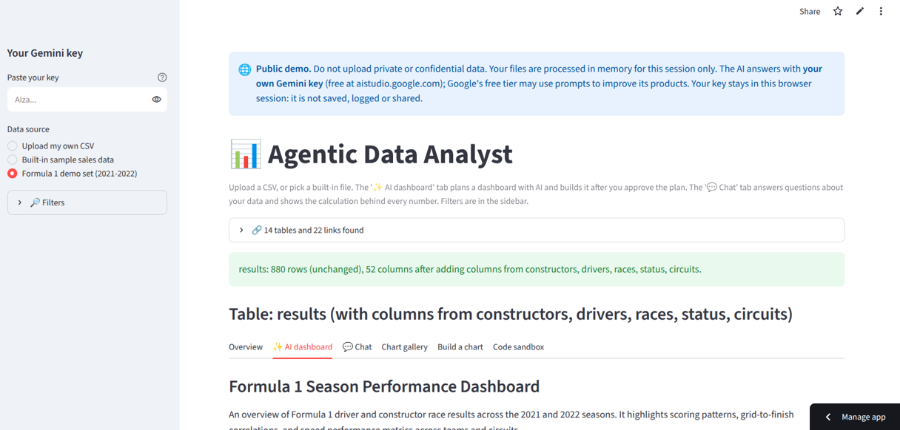

Built with Google ADK and Gemini
Upload one or more CSV files. An AI plans a dashboard you approve chart by chart, and a chat answers questions about the data — every number comes with the pandas code and the result that produced it, not just a claim.

An unedited screenshot of the live app, seconds after opening the Formula 1 demo set.
Four steps, in order. Nothing is built until you say so.
Add one or more CSV files, or open the Formula 1 demo. The relationships between files — which column points to which row of another — are found without AI, by comparing values.
A planner agent reads a text summary of the data (never the raw rows) and proposes a dashboard. You drop what you don't want, then approve it.
A chart agent writes the code for each chart and a sandbox runs it. A failed chart gets a cleaned-up error and one more try; a rule-based builder fills in anything that still fails, so a dashboard always comes out.
The chat writes pandas code for questions that need real numbers. Every answer has a "Show the calculation" panel with the exact code and result, and an unsupported number gets a visible warning instead of being stated as fact.
Accuracy measured against answers computed independently with plain pandas on the same data.
| Test | Questions | Result |
|---|---|---|
| Formula 1, all 14 tables, several tables per question | 18 | 16/18 → 17/18 → 18/18 |
| Formula 1 demo subset (2021–2022), answered from saved replies | 11 | 11/11, 0 requests to Google |
This is not a blind test. The two first-run misses — one counted result rows instead of distinct races, one compared a number column with quoted text — were fixed after I looked at them, then the same 18 questions were run again.
The checker is automatic: it compares numbers and names against expected values, so it can mark a correct but unusually phrased answer wrong, and it can't judge an explanation.
The demo score shows the saved answers are right and replay works — not that the AI is right every time.
For live AI dashboards and live calculations, run it on your own machine with a free Gemini API key.
Full setup, architecture diagram and test notes are in the README. The Formula 1 demo set is a subset (2021–2022 seasons) of Formula 1 World Championship (1950–2024) by Rohan Rao on Kaggle, listed there as CC0: Public Domain, originally compiled from the Ergast F1 database.
Free, no sign-up. Bring your own Gemini key, or start on the Formula 1 demo set.